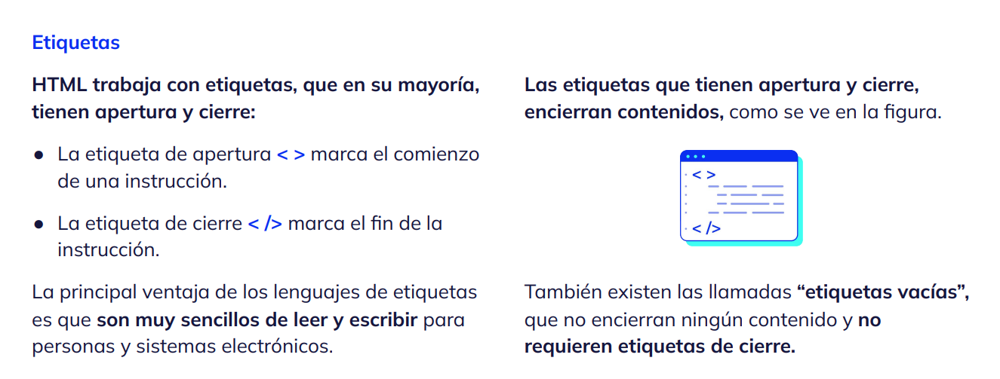
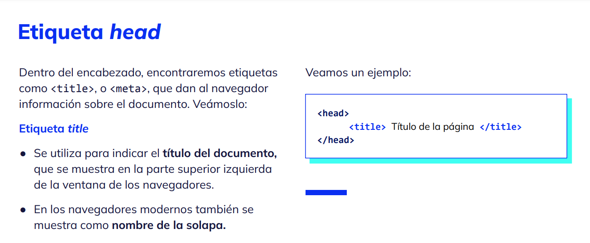
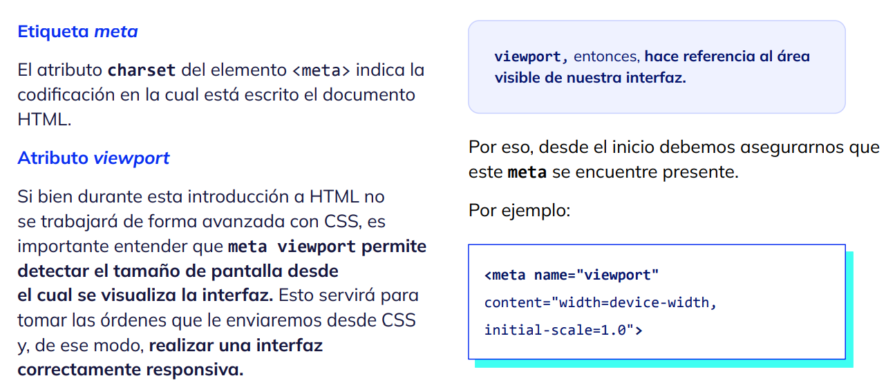
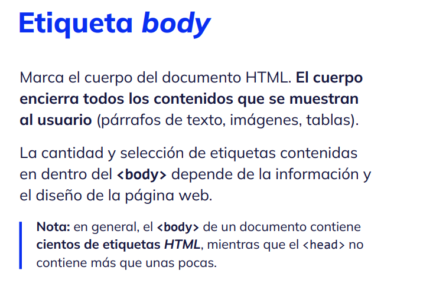
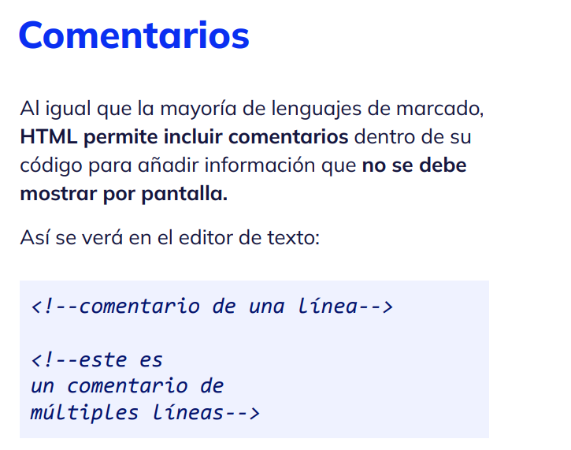
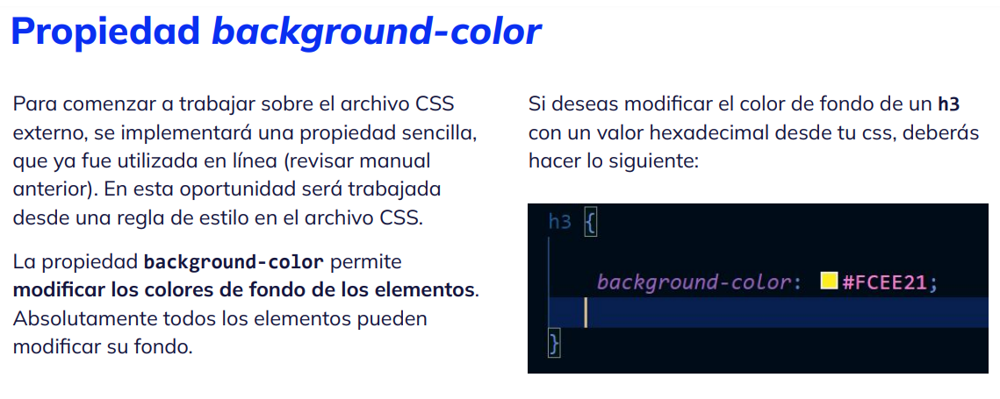

Modulo 1
Temario
- Módulo 1: Introducción a HTML.
- Módulo 2: Imágenes, vínculos y css.
- Módulo 3: Formularios: integración con IA.
- Módulo 4: Publicación de proyecto.
- Módulo 5: Flex, multimedia y tablas
Atributos: son información adicional de los
elementos de HTML. Por ejemplo, el destino
de un vínculo en el caso de los <a> </a> o el
valor de la ruta de los elementos <img>.
Backend: es la parte del desarrollo
relacionada con la base de datos y el
servidor. Entre otros lenguajes de
programación, pueden utilizarse PHP, Node.js,
MySQL, y MongoDB.
CSS: es un lenguaje que indica a los elementos
previamente estructurados con HTML cómo
deben visualizarse en el navegador. Se
maneja a través de reglas de estilo en cuanto
a su sintaxis.
GPT: es la sigla de Generative Pre-trained
Transformer (transformadores pre-entrenados
generativos). Es una arquitectura de modelo
de lenguaje que emplea aprendizaje
profundo para producir textos que simulan la
redacción humana. Fue desarrollada por
OpenAI una empresa de investigación en
inteligencia artificial con sede en San
Francisco, California.
Front End: es la parte del desarrollo que
interactúa con el usuario. Entre los lenguajes
utilizados, encontramos, por ejemplo,
JavaScript, HTML y CSS.
HTML: es un lenguaje de marcado que permite generar documentos a partir de marcas o tags para luego ser interpretado por navegadores. IA: la “Inteligencia Artificial" es una rama de la informática que se enfoca en la creación de sistemas que pueden resolver tareas que requerirían inteligencia humana. Algunas de esas tareas son: analizar grandes cantidades de datos, reconocimiento de voz, detectar patrones y anomalías, procesamiento del lenguaje, entre otras. JavaScript: es un lenguaje de programación cuyo nombre oficial es ECMAScript. Otorga dinamismo interpretado por el navegador a los elementos previamente estructurados de HTML. Maquetador: en el desarrollo, es quien arma o diagrama el front de un desarrollo a través de HTML y CSS. Obsoleto: en inglés, deprecated, es el término utilizado para designar a aquellos elementos, atributos o cualquier otra parte de un lenguaje o código que haya dejado de utilizarse en versiones actuales del mismo. Por ejemplo, el atributo align: <p align="center"> Párrafo </p>
Propiedades: dentro de CSS se utilizan
propiedades para asignar características a
los elementos de HTML. Por ejemplo, color,
tipografía, ancho, alto, entre otras.
Prompt Engineer: profesional que se dedica a
crear y optimizar prompts (preguntas que se
utilizan para solicitar información a una IA)
para modelos de lenguaje como GPT con el
objetivo de obtener respuestas más precisas.
Selectores: es el puente de unión entre la hoja
de estilos y el HTML sobre el cual
implementamos el CSS. Podemos encontrar
ID, CLASS, Selector de Etiqueta, así como
también selectores compuestos y avanzados
formados a partir de los selectores anteriores.
W3C: el Consorcio WWW, en inglés: World
Wide Web Consortium, es un consorcio
internacional que genera recomendaciones y
estándares que aseguran el crecimiento de la
World Wide Web a largo plazo.
Declaración del tipo de documento
Al observar un documento HTML por primera
vez, encontraremos una declaración llamada
doctype.
A diferencia de las versiones anteriores de HTML,
donde existía más de un tipo de doctype, HTML5
cuenta con un solo tipo de doctype
¿Para qué se utiliza la etiqueta doctype? Un DTD (Document Type Definition) es un conjunto de normas y restricciones que deben cumplir los documentos de un determinado tipo. Por ejemplo, si se define un DTD para los documentos relacionados con libros, se puede fijar como norma que cada libro tenga un único título, que tenga uno o más autores o que la información sobre el número de páginas pueda ser opcional.
Atributos
Las etiquetas en HTML tienen atributos, que
brindan valores o información adicional para
configurar los elementos o ajustar su
comportamiento de alguna manera.
Por ejemplo, el atributo lang, encontrado en la
etiqueta <html>, define el idioma del contenido
de un elemento
Todo documento HTML se divide en dos partes
principales: el encabezado y el cuerpo.
● El encabezado, o
● El cuerpo, o , contiene en su interior toda la información visible para el usuario    
En HTML usualmente encontramos elementos
"en bloque" o elementos "en línea".
● Un elemento en línea solo ocupa el ancho de
su contenido.
● Un elemento en bloque ocupa todo el ancho
del navegador o de su elemento padre
(contenedor), creando así un "bloque".
El <header> debe contener información
introductoria, que ayude a la compresión o la
navegabilidad del contenido más cercano.
Este elemento puede utilizarse de distintas
maneras:
● Puede ser un header general, para todo el
documento html.
En estos casos, generalmente contiene elementos
como el logo, un menú, un formulario de búsqueda,
entre otros componentes.
● Puede ser el header de una sección del html.
El <footer> representa un pie de página de su
ancestro más cercano, por ejemplo, una sección o
el elemento raíz.
Este pie de página suele contener información
sobre su sección, como información de contacto,
enlaces a documentos relacionados, los datos de
derechos de autor y similares.
El elemento <footer> puede utilizarse más de
una vez y colocarse en cualquier sitio de la
interfaz, pero generalmente se encuentra al final
de nuestro documento, o debajo de una sección.
En HTML, <nav> representa una sección con enlaces de navegación. Puede enlazar con otras páginas, o con partes dentro de la página
El main sirve para destacar la parte central del
contenido de nuestro sitio.
En el proyecto que desarrollarás durante este
curso, deberás utilizar el elemento
Definición de article
El elemento <article> representa una parte de
una interfaz, que se quiere que sea reutilizable
de manera independiente, por ejemplo, para
redifusión.
Definición de section
El elemento section representa una sección
genérica de un documento, que no tiene un
elemento semántico más específico para
representarla.
¿Qué es CSS? CSS (Cascading Style Sheets) u Hojas de estilo en cascada en español, no es un lenguaje de programación, pero tampoco es un lenguaje de marcado. Es un lenguaje de hojas de estilo, es decir, te permite aplicar estilos a elementos en documentos HTML.
Sintaxis y reglas de estilo El lenguaje css se conforma por reglas de estilo que siguen la siguiente lógica: ● El selector es el elemento sobre el cual se aplica la regla de estilo. Por ejemplo: body, h1, section, p. ● La propiedad es la característica que se modifica, por ejemplo, color, tipografía, tamaño, etc. ● El valor que se aplica a la propiedad, por ejemplo: red, arial, 12px, etc.
¿Qué es una fuente tipográfica?
Una font, o fuente tipográfica, es el estilo o
apariencia de un grupo completo de caracteres
guiados por características comunes. Algunos
ejemplos de fuentes conocidas son Times New
Roman o Helvetica
¿Qué tipografías utilizar para web?
Puedes usar cualquier tipografía, ayudándote
con reglas y demás elementos avanzados de
CSS. Algunos de estos elementos escapan a los
fines de este curso, pero te enseñaremos dos
formas de trabajo con distintos recursos, de
manera que puedas obtener el resultado deseado
y asegurarte de que se visualizará tal como
quieres. Para ello, te recomendamos utilizar
fuentes seguras o Google Fonts. Veámoslo a
continuación.
Sin embargo, como muchas veces sucede, algunos elementos (por ejemplo, los enunciados) deberán tener una tipografía diferente al resto del texto. Para ello, la propiedad font-family puede asignarse a esos elementos específicos
Para modificar el tamaño de la letra puedes utilizar diversas medidas de longitud. Dado que este aprendizaje representa un trabajo inicial sobre CSS, utilizarás px y %. ● El tamaño tipográfico inicial es de 16px. ● Los enunciados mantienen una relación proporcional a esta medida inicial. Por ejemplo, los enunciados h1 poseen un tamaño inicial del doble de los párrafos, es decir 32px. De todas formas, el tamaño por defecto puede ser modificado sin problemas desde CSS.
Para escribir menor cantidad de palabras y facilitar el proceso de edición, también puedes trabajar con shorthands. Es decir, puedes especificar propiedades individuales en una sola propiedad. Las propiedades que pueden formar parte de este shorthand son: ● font-style ● font-variant ● font-weight ● font-size/line-height ● font-family
